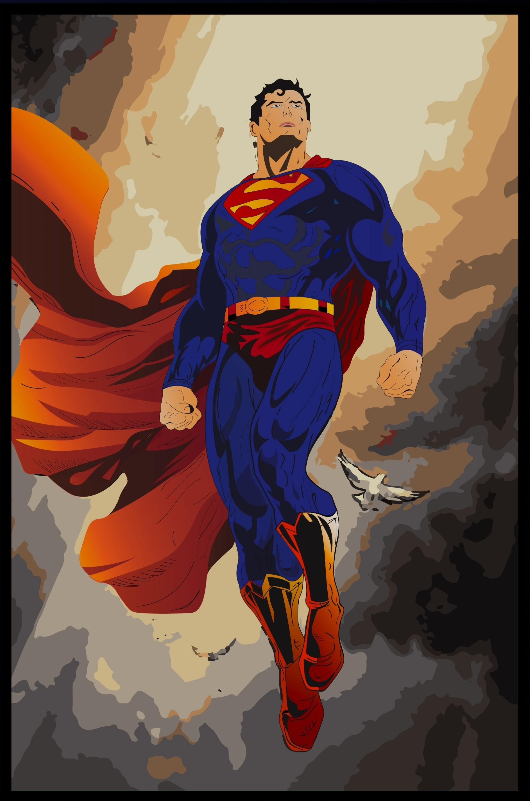
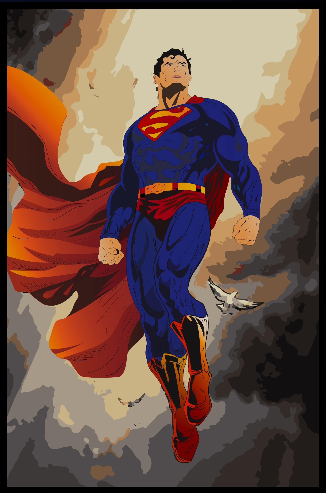

Graphic Design
One of the first things I took up during the pandemic was Graphic Design. Creating digital art was
something I have always wanted to do, and so I started learning Adobe Illustrator. I loved the entire
learning process, and I really encourage people to take this up if they have any interest in art at
all. It was a slow start but over the last few years I have improved a lot and added more onto my
skill set by learning Adobe Photoshop as well to help me in making poster designs and other
illustrative designs.
I started freelancing for a while but switched my focus to software development and projects soon
after. I still make posters and illustrations as a hobby from time to time.
Certifications and Learning
Around June 2020, I had finally made the decision of pursuing Computer Science in University after
which I tried to make the most of my "free time" by taking up online courses to explore different fields
such as Data Science, Cyber Security, IT Support, Cloud Computing, Java and more. These courses were
mainly taken to give me an idea of what the field holds and what I want to specialize in, during my time
in university and beyond. I have completed over 60 courses from sites like Coursera, FreeCodeCamp,
Udemy, etc. Credible or not, I'm happy to have gained a ton of knowledge from these.
After all that theoretical knowledge gained from the
Courses and YouTube videos, I realized the best way forward now is to put the knowledge into practice
and start building my projects.
Projects
I started working on projects by late 2021. I had made a decision to take a gap year before starting
university to build up my portfolio and look for early opportunities in the field. Surprisingly, I did
not end up wasting my year and worked on intermediate projects even before joining university.
At first, I had no set plan or ideas to build upon. After a bit of research I found Jetbrains Academy
that provided project-oriented learning, split up into various stages of the project. This was really
helpful to me, and I strongly recommend this website to anyone starting out their coding journey.
I pushed myself more and started working on more projects of my own, like this website, and learnt a
lot about Version Control and GitHub along the way. The pandemic was a terrible thing, but I did find
a silver lining as it allowed me to improve a lot as a developer and student.
My First Hackathon
October 2022. I attended my first hackathon, Hack The Valley 7 which was hosted at the
University of Toronto Scarborough. They hosted a ton of workshops covering various topics like
technical interviews, Site Reliability Engineering, React, etc. It was a great learning experience for
me, and I also got to network with a lot of people.
Putting my development skills at work, we managed to build a website and a design prototype for our
app SustainU.
We were learning, building, designing and documenting on the fly as it was the first
hackathon for all of my teammates as well.
With over 600+ participants, and people coming from all around Ontario, I did not expect much from
myself. Spanning across 3 days of complete sleep deprivation and unhealthy
amounts of caffeine, also happened to be my first ever win. SustainU was named the Best Nature Hack.
It is hands down my greatest achievement till date, and it's something I'm really proud of. All that
effort I had put in over the past couple years, had finally paid off.
Currently Working On
My main focus right now is improving this website and trying to make it more responsive. I am just
getting started with frameworks and responsive design, and I hope to incorporate my learnings into this
website as soon as possible. Any resources and advice is always welcome, please feel free to reach out
to me using the Contact section :)
Moreover, I am always trying to find ways to fine-tune my existing projects in terms of efficiency
and aesthetics. I have got a lot to improve on the overall design of the Text Editor and actively
working on adding more features to it. Again, any and all input is always appreciated and welcome.
Lastly, I am working towards attending and winning a lot more hackathons in the coming months, and I
hope to gain a lot from them as they come.


 
